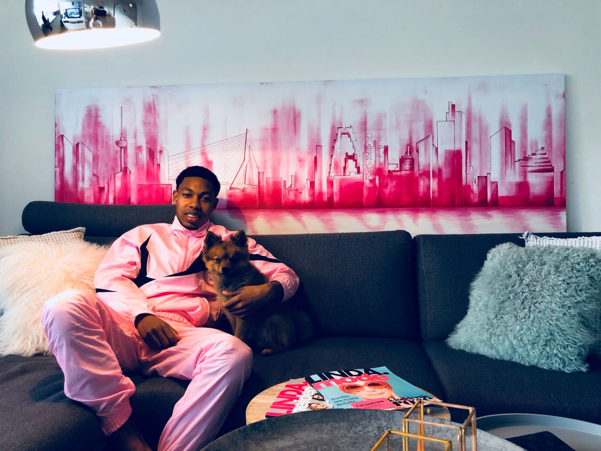

Welkom op Groen-art.nl!
Groen-art.
Groene kunst? Natuur? Of ecologisch verantwoord schilderen? De verklaring is simpeler: mijn naam is Marjo Groen. Vandaar de naam van deze website.
Toch is natuur wel degelijk een inspiratiebron voor mijn schilderijen. Zo schilder ik graag dieren en ook abstracte vormen, die ik vaak afleid van concrete natuurverschijnselen.
Op de Vrije Academie in Zevenaar en later bij atelier "De Waan" heb ik leren tekenen, schilderen en etsen, met allerlei materialen zoals potlood, houtskool, krijt, inkt, aquarel-, olie- en acrylverf. Daarbij beoefende ik verschillende schildertechnieken, van realistisch tot abstract.
Mijn zoektocht naar geliefde onderwerpen, kleurgebruik, stijl en materiaal heeft tot verschillende inzichten geleid. Zo brengen mijn kleurige schilderijen uit de beginperiode vrolijkheid en boeit mij momenteel de mysterieuze kant van de natuur. Het meer abstraheren nodigt mij uit tot "grasduinen" en telkens opnieuw en anders kijken.
Ik schilder ook in opdracht. Hiervoor kunt u mij persoonlijk benaderen via mail of mobiel (zie Contact).
Veel kijkplezier!


Nieuwe schilderijen op de site (sinds begin 2026)
In de categorie Natuur: Uiterwaarde Lathum, Darss (groot formaat schilderijen)
In de categorie Dieren: Bailey, hond Carla
In de categorie Mysterie: Boekomslag: Frisse bloesem, opgedroogd zweet